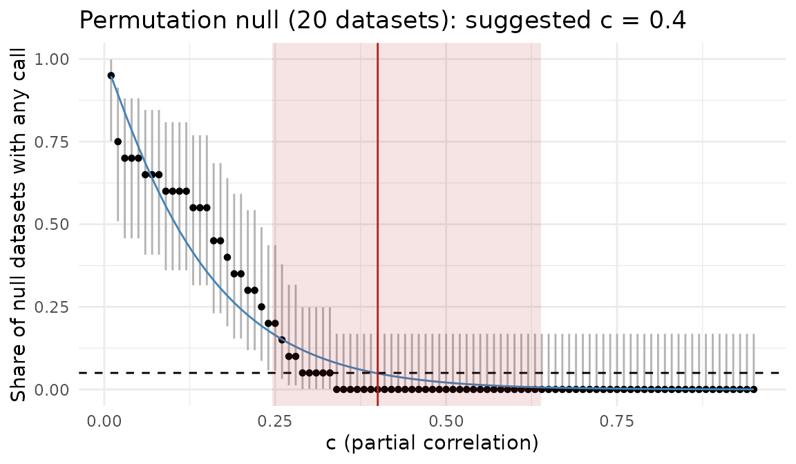

Every sampler in multiGGM ("gwishart",
"ssvs", "mghs") returns the same family of
posterior edge probabilities, for each group and for each pair of
groups. You select edges from them with a median-probability rule or
with Bayesian false discovery rate (FDR) control. The probabilities come
from running sums kept over every post-burn-in iteration, so they are
available with save_draws = FALSE, which is what makes fits
with hundreds of variables practical.
What is available
| G-Wishart, SSVS | mGHS | |
|---|---|---|
| Per group | ||
| Structural | PIP, | and |
| Cut model | ||
| Magnitude | ||
| Per pair of groups | ||
| Structural | , | |
| Cut model | ||
| Magnitude | ||
| Union |
Here
is a precision-matrix entry or partial correlation (scale),
, and
is mGHS’s shrinkage weight. edge_probs() returns all of
them as one tidy table; edge_prob_matrix() extracts one as
a matrix.
An example with two kinds of difference
Two groups share a block of edges (C). Group 2 has lost a block of edges (A: a structural difference) and has a block whose edges are 1.5 times stronger (B: same edges, different strength).
library(multiGGM)
p <- 15
edges <- function(nodes) cbind(nodes[-length(nodes)], nodes[-1])
A <- edges(1:4); B <- edges(6:9); C <- edges(11:14)
O1 <- O2 <- diag(p)
O1[A] <- 0.3
O1[B] <- 0.3; O2[B] <- 0.45
O1[C] <- 0.3; O2[C] <- 0.3
O1 <- O1 + t(O1) - diag(p); O2 <- O2 + t(O2) - diag(p)
set.seed(1)
X <- lapply(list(O1, O2), function(O) matrix(rnorm(3000 * p), ncol = p) %*% chol(solve(O)))
fit <- multiggm_mcmc(data_list = X, method = "ssvs", burnin = 300, nsave = 600,
seed = 1, save_draws = FALSE, diff_deltas = c(0.05, 0.1))
ep <- edge_probs(fit, scale = "precision")
pairs <- ep[ep$type == "pair", ]
block <- ifelse(paste(pairs$i, pairs$j) %in% paste(A[, 1], A[, 2]), "A: deleted",
ifelse(paste(pairs$i, pairs$j) %in% paste(B[, 1], B[, 2]), "B: scaled",
ifelse(paste(pairs$i, pairs$j) %in% paste(C[, 1], C[, 2]), "C: shared", "null")))
aggregate(cbind(p_struct, p_exceed_0.1, p_union_0.1) ~ block, data = pairs, FUN = mean)
#> block p_struct p_exceed_0.1 p_union_0.1
#> 1 A: deleted 0.97611111 1.000000e+00 1.000000000
#> 2 B: scaled 0.00000000 9.755556e-01 0.975555556
#> 3 C: shared 0.00000000 1.111111e-03 0.001111111
#> 4 null 0.01407986 1.736111e-05 0.014097222- The structural rule sees the deletion (A) but not the change in strength (B): the edge is present in both groups either way.
- The magnitude rule sees B, and here also A, because a deleted edge changes by its full size.
- The union rule sees both, and is the natural choice when any kind of difference matters.
select_diff_edges(fit, rule = "union", c = 0.1, scale = "precision", alpha = 0.05)
#> <multiggm_diff_selection>
#> Groups 1 vs 2, rule: union (c = 0.1, precision scale), decision: bfdr
#> Selected 6 edges at target FDR 0.05 (posterior expected FDR 0.012)
#> i j prob q_value
#> 1 1 2 1.0000000 0.0000000000
#> 2 2 3 1.0000000 0.0000000000
#> 3 3 4 1.0000000 0.0000000000
#> 4 7 8 0.9966667 0.0008333333
#> 5 6 7 0.9733333 0.0060000000
#> 6 8 9 0.9566667 0.0122222222Within one group, select_edges() works the same way:
select_edges(fit, group = 2, rule = "structural", decision = "median")$n_selected
#> [1] 6Median rule or Bayesian FDR
decision = "median" selects edges with probability above
0.5, the median-probability model. decision = "bfdr"
(default) selects the largest set whose posterior expected FDR, the mean
of
over the selected edges, is at most alpha; tied
probabilities are kept together. Both report the posterior expected FDR
of the set they select. Either is only as good as the calibration of the
probabilities.
Do not select by “the interval excludes zero”
It is tempting to call an edge differential when the credible
interval of
excludes zero, or equivalently when the sign probability
(column p_sign) is high. Under a continuous posterior,
,
so this is not a probability that the edge differs. An edge with the
same true value in both groups still has an estimated
of sampling-noise size, and with enough data its posterior is narrow
enough to exclude zero. In a simulation with mGHS (p = 100, n = 1000 per
group), Bayesian FDR on the sign probability gave an achieved FDR of
about 0.50 at a nominal 0.05. The same applies to SSVS, whose spike is
continuous, and to G-Wishart edges present in both groups.
p_sign is reported for description only.
Choosing c
The magnitude and union rules test , so is the smallest difference worth detecting, and the FDR they control treats true differences below as nulls. Choose it on the scale of the question:
- On the partial-correlation scale, is directly interpretable (e.g. 0.1).
- It must be clearly larger than sampling noise in , roughly for a partial correlation; otherwise identical edges are flagged. In the example, .
- Thresholds are fixed at fit time by
diff_deltas, because the running sums count exceedances during sampling. Pass a fine grid (e.g.seq(0.02, 0.3, by = 0.02)) if you want to choose afterwards. Withsave_draws = TRUE, any other can be computed from the draws.
Choosing c from a permutation null
The noise level of
depends on the data, the sample sizes and the prior, so no fixed
is safe. In simulations with no true differences,
(precision scale) gave at least one false call in about two thirds of
datasets at
,
and
gave achieved FDRs of 0.37 to 0.67 at
.
calibrate_c() estimates the smallest
these data can tell from noise. It shuffles the group labels, refits
each shuffled dataset with the settings of your analysis, and finds the
at which at most 5% of shuffled datasets (where every call is false)
produce any call.
# Two groups (60 and 40 samples) that share one network
sim0 <- simulate_multiggm(K = 2, p = 8, n = 60, seed = 3)
set.seed(4)
X0 <- list(sim0$data_list[[1]],
matrix(rnorm(40 * 8), 40) %*% chol(solve(sim0$Omega_list[[1]])))
fit0 <- multiggm_mcmc(data_list = X0, method = "ssvs", burnin = 150, nsave = 150,
seed = 1, diff_deltas = seq(0.01, 0.8, by = 0.01))
cal <- calibrate_c(X0, fit = fit0, n_perm = 20, verbose = FALSE)
cal
#> <multiggm_c_calibration> ssvs | groups 1 vs 2 (n = 60, 40)
#> 20 permutations run, 20 succeeded (n_perm reached)
#> Target: share of null datasets with any call <= 0.05 (selection: P(|D| > c), Bayesian FDR 0.05, pcor scale)
#> c_null = 0.396 (95% CI 0.246 to 0.639)
#> Suggested c: 0.4
#> Noise reference (0.99 quantile of |E[D]| under the null): 0.444
#> At c = 0.4: share with any call 0.00 (raw), mean calls 0.00
#> Use c = max(c_scientific, suggested_c). as.data.frame() gives the curve.
plot(cal)
The points are the share of shuffled datasets with any call at each ; the curve is a Weibull fit to each dataset’s largest with a call, which borrows strength across datasets, so 20 to 50 shuffles suffice. Then select with
select_diff_edges(fit0, c = max(0.10, cal$suggested_c))
#> <multiggm_diff_selection>
#> Groups 1 vs 2, rule: magnitude (c = 0.4, pcor scale), decision: bfdr
#> Selected 0 edges at target FDR 0.05 (posterior expected FDR 0.000)Three points matter:
- is a noise floor, not a scientific threshold. It is the smallest difference these data can distinguish from noise. Use .
-
Use the analysis settings. Pass the fit
(
fit =), so the shuffled data are fitted with the same prior, chain length and number of chains. The posterior spread of , and the resolution of its probabilities, depend on them. Fit the analysis withdiff_deltascovering the grid (as above) so that the chosen is available without saved draws. For mGHS at small , use the samehyper$R_eta(see?multiggm_mcmc). -
Cost. Each shuffle is a full fit (here 20 small
fits). They are independent: use
parallel = TRUE. Early stopping ends the run when the estimate is precise enough.
Each original group is centred on its own means before the samples
are pooled, as multiggm_mcmc() centres the data it fits;
nothing is rescaled.
mGHS
Following Busatto & Stingo (2025), the shrinkage weight
uses the local scale only. The horseshoe shrinks null edges mainly
through the global scale
,
so for a null edge
stays close to its prior, under which
.
The structural and cut-model probabilities are therefore near 0.5 for
null edges, and the authors’ median rule
(rule = "median_shrinkage") has a high false-positive rate
(about 0.37 in their Table 1). For differential edges with mGHS, use the
magnitude rule.
References
Barbieri, M.M. & Berger, J.O. (2004). Optimal predictive model selection. Annals of Statistics, 32(3), 870-897.
Busatto, C. & Stingo, F.C. (2025). Inference of multiple high-dimensional networks with the Graphical Horseshoe prior. Journal of Computational and Graphical Statistics. doi:10.1080/10618600.2024.2435480
Newton, M.A., Noueiry, A., Sarkar, D. & Ahlquist, P. (2004). Detecting differential gene expression with a semiparametric hierarchical mixture method. Biostatistics, 5(2), 155-176.